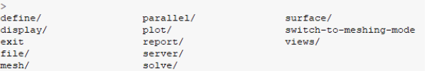
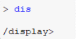
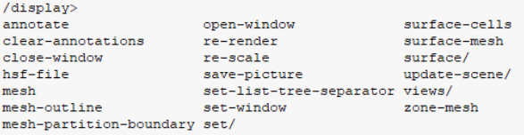
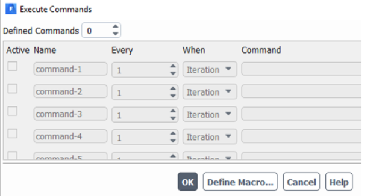
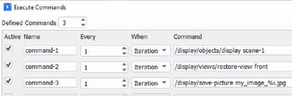

How to construct a journal file for Fluent batch jobs#
Rules#
Some basic rules follow the linux basics as well. (Learn more about linux basics here for ADA, although one could find many others.)
Avoid spaces for file names, folder paths, boundary condition names, and species.
Do not use command characters such as !,@,&,* etc.
Avoid using non-English characters such as $,£,€ etc for name variables.
Use underscores or hyphens for variable declarations if they are long.
Avoid using upper and lower cases.
Basics of Journaling#
Once a VNC session through openOnDemand is open, the ansys module can be loaded. (Note that journaling indicated below can very well be performed in your local laptop and desktop installations.) (See here for using Fluent via GUI on ADA. :ref: Using a VNC desktop session via Open OnDemand)
Once a Fluent session is open, and you want to create the appropriate journal commands for your Fluent jobs, the Fluent console is to be used.
Use <Enter> to show current menu.
Type any of the command in that menu to move inside that menu.
Use q (lower case Q) to move a level up.
Pressing q many times leads to the root menu.
, (comma) will accept the default setting within a command. For instance, if the command has two options of yes and no, the comma will keep whichever is the Fluent default.
Test everything locally before confirming a set of commands for journal file to be used on Iridis.
On pressing enter at the fluent console, the following is visible:
This can be done by typing the whole command or a short hand for the same (and pressing tab).
Typing in dis or display will take you inside the display menu.
This way, one could test and write the necessary commands required for the batch script for ADA. e.g. The following command will save the residuals as a JPEG file.
/display/save-picture residuals%i.jpg
Where %i is the placeholder for the number of iterations the simulation was run for. In this example, the file, residual100.jpg file will be saved if the solver is iterated for 100 iterations. And the image will be saved at the 100th iteration.
For example, if one wants to generate images on the fly, the first thing to do is to create an object with the required settings to be plotted (settings like surface, contour, etc). One also needs to save the views in which one wants to look (or save) the final image. This means the rotation, rolling and orbiting commands are important if one wants to avoid inverted or contorted images.
The following 3 command saves an image.
/display/objects/display scene-1
/display/views/restore-view front
/display/save-picture my_awesome_image%i.jpg
%i is the iteration number. %t provides the timestep to the filename. And lastly, %f provides flow time (less commonly used, but helpful for variable time step file nomenclature.)
These are to be tested locally, then one could find the execution command tab as shown as follows:
Similarly, the above indicates if the steps are to be done using GUI. When the GUI is not used (batch mode), the following commands should be provided through figuring out the commands for the same.
In this way one could potentially simulate an entire case in Fluent.
Some Scheme programming Basics#
The following is based on Scheme programming in Fluent, and a Stanford course on the same,
Create a new global variable
# (define symbol value)
(define x 3)
Display a variable
(display x)
Operations
# Replace x and y with numbers to see results in
# Fluent console
(+ x y)
(- x y)
(* x y)
(/ x y)
(expt x y)
(< x y)
(= x y)
Create list
# creates a list
'(2 4 56)
Logic Operations
# and
(and 3 5)
(or 3 5)
(not 3)
(list? x)
(real? x)
(positive? x)
#Perform boolean
(list? (2 4 56))
Loops
# A do loop carries out a repeated task at intervals x_delta
(do ((x x_lo (+ x x_delta))) ((> x x_hi)) ... )
# example, display values from -1 to 1 at a step of 0.1
(do ((z -1 (+ z 0.25))) ((> z 1)) (display z))
# A for loop can be written in a similar way
(for-each function list1 list2 ...)
# Multiply numbers together across two arrays
(define (mult x y) (* x y) (for-each (mult) '(0 0.25 0.5 0.75 1.0) '(1 2 3 4 5)))
Control
# Syntax is (if test true_value false_value)
# See for example the following,
# if a value is positive decrement it.
(define x 4) (if (not(positive? x)) '() (set! x (- x 1)))
# SWITCH case has the following syntax
(cond (test1 true_value)
(test2 true_value)
(test3 true_value)
(else false_value))
Function definitions
# Syntax is
# (define symbol value)
# Create a function returning the absolute value of parameter x
(define (abs x)
(cond ((< x 0.0) (- x))
((< x 0.0 x)))
Lastly, outside Fluent, one could also practice here Scheme programming.